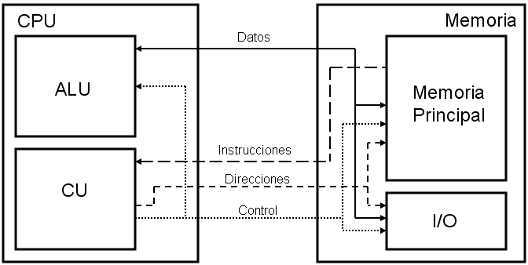

Pasos del ciclo de instrucción
FETCH
El procesador busca la instrucción en la memoria RAM usando el PC (Program Counter).
DECODE
La Unidad de Control interpreta la instrucción y decide qué hacer.
EXECUTE
Se realiza la operación (por ejemplo, suma, carga o salto).
WRITEBACK
Se actualiza el PC y se reflejan los cambios en registros o memoria.

Consejos de uso
- Utiliza el editor guiado para construir instrucciones paso a paso.
- Usa el editor manual si ya sabes las instrucciones (ej:
LOAD 5). - Haz clic en "Ejecutar paso" para simular el ciclo de instrucción.
- Observa cómo se resaltan los componentes según cada fase.